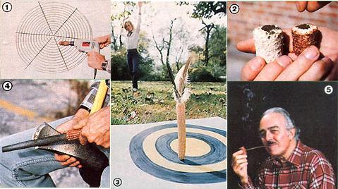

Did you know that there're more uses for a shelled ear of corn that you can shake a stalk at?
At this time of year - when last summer's corn crop has been shelled, providing the livestock with a cribful of winter feed and the family with enough cornmeal to last until the next growing season - my clan and I are always faced with a veritable mountain of cobs. And while those kernelless cores wouldn't command much of a price at the market, we've discovered that the stripped ears are surprisingly useful (and therefore downright valuable ) on our homestead. In fact, once you've tried out some of the ideas that follow, you'll likely wonder how you ever got along without keeping a cob or two on hand!
To begin with, we've found that it's helpful to store a few of the abrasive ears next to the barbecue grill. A cob's nubby-textured surface is great for cleaning greasy wire racks . . . and when the job is done, the dirty scrubber can be dried to serve as fuel for the next cookout, or as a fire starter in our woodstove.
A corncob can serve as a clothes brush, too. For example, if you've ever traipsed through the woods, you're probably familiar with those dry little burrs called beggar's-lice that have a habit of clinging to your clothing. Well, whenever I come home covered with the stickers, I don't waste my time picking the pesky seeds off one by one. I simply grab a corncob and scrub them off with a few quick swipes. The same tool can also come in handy when you pull your Sunday suit out of the closet, only to discover that it's been hanging next to your mohair sweater!
With the arrival of spring, corncobs make ideal seed-starter pots, and they're a good bit less expensive than their store-bought counterparts, too. To make one of the all-natural containers, simply cut the cob into 2" or 3" lengths. Next - using a sharp pocketknife - whittle out the inside of each section, leaving just a thin bottom layer . . . fill the cob cups with compost . . . and plant your seeds. Later, when the shoots are large enough to be assigned a permanent spot in the garden, simply scrape open the closed end of each cylinder, and plant the whole shebang! The cob will decompose in time and return its nutrients to the soil.
Come summer, when the youngsters are out of school and looking for some excitement (and your patience is beginning to wear a bit thin), those nubby cylinders will prove useful again. Corncobs, with a few alterations, can become splendid lawn darts. Your teenagers may enjoy making these toys by themselves, but the smaller fry will likely require some assistance in "cobbling up" the project.
To make a set of darts, you'll need four to six corncobs, three good-sized feathers - with a slight curve to them, if possible - for each cob (your farm fowl could lend a helping wing here), and one 3"- to 4"-long stick (or you could use a large nail) per dart.
Once you've assembled the materials, position the three feathers so that they curve outward, and push the tips of the quills into the wider end of the cob, as shown in the photo. (You may have to use a small finishing nail to start the holes.) Once the dart's "wings" are in place, insert the 3" to 4" stick in the narrow end of the cob, leaving a point that's 1-1/2" to 2" long. (You might want to sharpen the exposed end of the stick.) Finally, draw a target in the dirt or on a large sheet of paper, and - after discussing safety precautions with the young competitors - join your family in a game of outdoor darts!
Of course, no article concerning corncob projects would be complete without at least some mention of what's perhaps the bestknown use for an empty ear: the corncob pipe. You can make your own "Huckleberry Finn smoker" by cutting a 1-1/2" length from the wider end of a cob. Hammer a nail hole in the side of this section, about 3/8 inch up from one end, making the opening large enough to accommodate a small hollow reed or a store-bought pipe stem. Now, use your pocketknife to hollow out the cob, leaving about a 1/4"-thick wafer intact for the bottom of the bowl. Then simply insert the reed or stem into the nail hole . . . and admire your authentic corncob pipe! (If tobacco isn't your vice, congratulate yourself . . . and let the youngsters use the finished product for blowing soap bubbles.)
There are still other ways to recycle the versatile cobs, including putting them to work as paint rollers and tool handles, and you'll likely come up with a few more as you get accustomed to having the nubby rounds on hand. In fact, you just might - when planting next season's corn crop - be as eager to harvest the cobs as you are to eat the kernels!
|
 Corncob craft: [1] a grill brush (here it's attacked to a drill bit for fast cleaning) . . . [2] biodegradable seed-starter pots . . . [3] a lawn dart (note the placement of the feathers) . . . [4] a tool-handle grip . . . [5] a homemade smoker. |
|
|